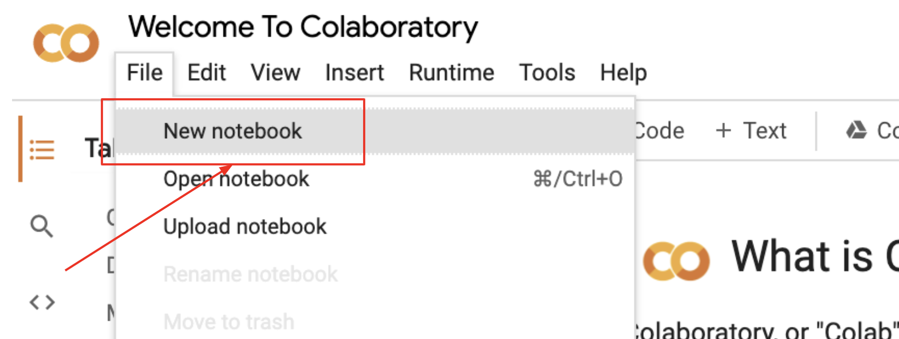
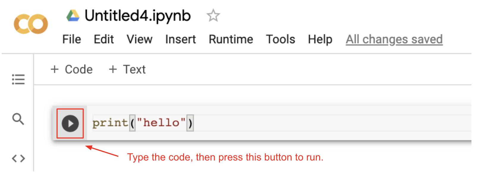

Lesson 3 - Data Science Tools
At the end of this lesson, you will be able to:
- Create a Google Colab computation notebook.
- Describe what the pandas and matplotlib libraries do, and how a notebook imports them.
Computational notebooks
Data scientists mostly work in computational notebooks. Think of one as a lab notebook for code: a single document where the Python, your notes about it, and the results all live together, so you can see the code and the chart it made side by side.
The most popular kind is the Jupyter Notebook. We'll be using Google Colab, which is Google's hosted version: it runs the notebooks on Google's computers and stores them in your Google Drive, so there's nothing to install.
Open up Google Colab and make yourself a notebook: click the 'New Notebook' button (or, if you're already in Colab, go to the 'File' menu and pick 'New Notebook').

Try it out: write a Python statement to print “Hello”, then click the run button.

Everything you make ends up in your Google Drive, in a folder called Colab Notebooks (Colab creates it for you).
Note: You don't need to become a Colab expert. The point of the unit is to find patterns in charts and draw conclusions you can defend. The code is supplied; your job is to pick a chart that fits the question and say what it shows.
Activity
Open this Notebook and make a copy. Colab doesn't automatically give you your own copy when you start editing, so make the copy first or your changes will vanish.
Look around - what do you notice and wonder about? Follow the directions in the Notebook and make the changes.
Note: Python has a statement called import that pulls a library of extra functions into your program. Nearly every notebook in this unit starts by importing three of them: pandas, matplotlib.pyplot, and seaborn (a chart library built on top of matplotlib, imported under the short name sns).
Pandas
Pandas is the workhorse. It's an open-source data-analysis library for Python, and with pandas we'll load comma-separated files (CSVs, which are what you get when you export a spreadsheet as plain text) into dataframes, tables Python can work with, and then use its functions to summarize and plot them.
A single line of pandas reads a CSV file into a dataframe, figures out what type each column is, and hands you tools for selecting, summarizing, and plotting. The notebooks handle that setup so you can concentrate on the questions.
To get at pandas, the notebook imports it near the top with import pandas as pd. The as pd part gives the library a two-letter nickname, so instead of typing pandas.read_csv you type pd.read_csv. (Data scientists are not known for their patience with typing.) You don't need to memorize the import statements, and there's nothing to install. If you'd like to try it, add the line to the notebook you just made:

Matplotlib
The matplotlib Python library is what draws the actual pictures - high-quality graphs, charts, and figures. It's also how we'll add titles and legends to our charts.
Just like pandas, matplotlib has to be imported before you can use it. In your practice notebook, you can add it to the same code block as the pandas import (import matplotlib.pyplot as plt):

Further reading
As you start analyzing data and drawing conclusions, it helps to know the ways the data itself can steer you wrong before you ever draw a chart. Here's a good article about 8 types of bias in data and how to avoid them.